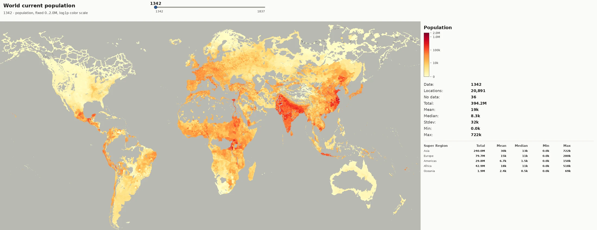
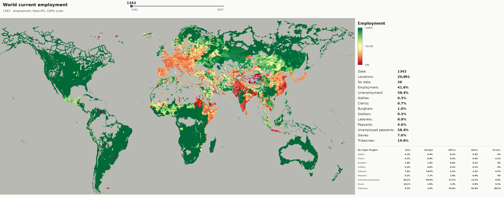
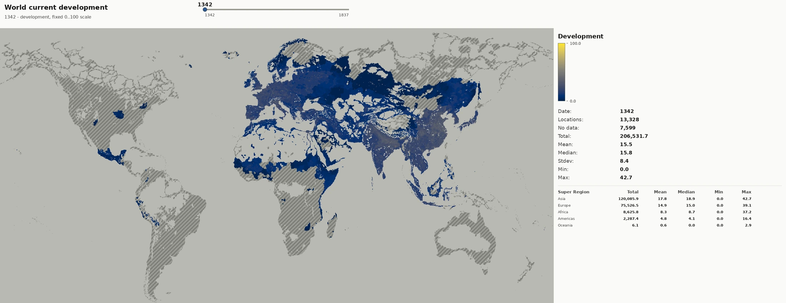
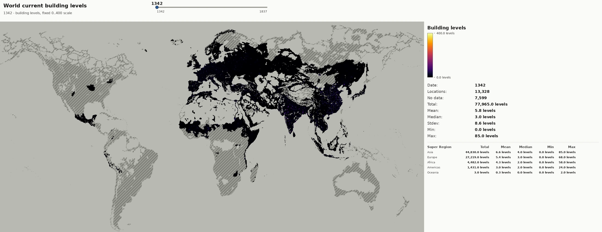
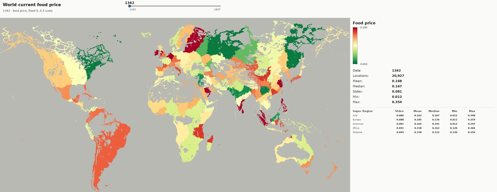
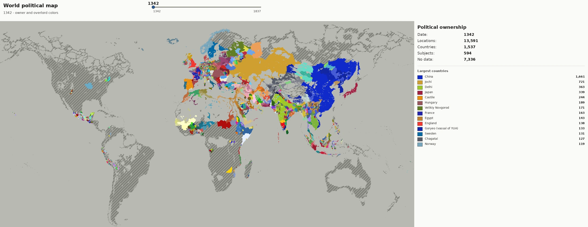

Published Examples
Goods Flow Explorer
Static production-method and goods relationship graph generated from parser data.Savegame Market Explorer
Market supply, demand, bucket, RGO, and production-method flow graph from a real save.Savegame Map Playback
Frame-by-frame map viewer for population, employment, development, building levels, food prices, and politics.Europedia Export
Searchable web export generated from the mod's in-game Europedia sources.Savegame Map Animations
Compact animated WebP exports from the current notebook map run.


Population
Absolute population across the save timeline.

Employment
Employment intensity over the same save cadence.

Development
Current development by location over time.

Building Levels
Built-up locations as the campaign expands.

Food Prices
Local market food-price pressure across the world.

Political Control
Owner-country color shifts through the save timeline.Quick Start
Use ppc as the canonical command surface for humans and Codex.
uv run ppc --help
uv run ppc setup
uv run ppc inspect
uv run ppc testCurrent Workflows
-
uv run ppc analyzeExports static parser tables and refreshesdocs/examples/goods_flow_explorer.html. -
uv run ppc output-modifiersPrints cumulative global output modifiers by good and age. -
uv run ppc production-throughputPrints each good's best available building throughput by age. -
uv run ppc savegameExports latest savegame facts and refreshesdocs/examples/savegame_explorer.html. -
uv run ppc europediaExports the custom P&P Europedia and refreshesdocs/examples/europedia.html. -
uv run ppc savegame-notebooks buildIngests saves into the raw parquet dataset read by the analysis workbench notebook. -
uv run ppc worldbuilder applyConsumes the World Builder handover: geography, attribute rows, improvement buildings, farm land and game-start setup. -
uv run ppc publish-docsCopies generated graph outputs fromgraphs/into the committed GitHub Pages examples. -
uv run ppc blueprint evaluateEvaluates accepted building blueprint economics and balance rules.
Important Paths
blueprints/accepted/: accepted building blueprints.blueprints/buildings.manifest.yml: blueprint enablement manifest.constructor.toml [worldbuilder]: handover and geography export paths, building map, farm land constants.graphs/: ignored local graph, Europedia, savegame, and notebook artifacts.docs/examples/: committed public docs snapshots served by GitHub Pages.constructor.local.toml: ignored machine-local deploy target config.
Live Deploy Guard
uv run ppc sync --yes mirrors constructor output into the configured live
Paradox mod folder. Treat it as a deploy action and run it only when the target in
constructor.local.toml is intentional.